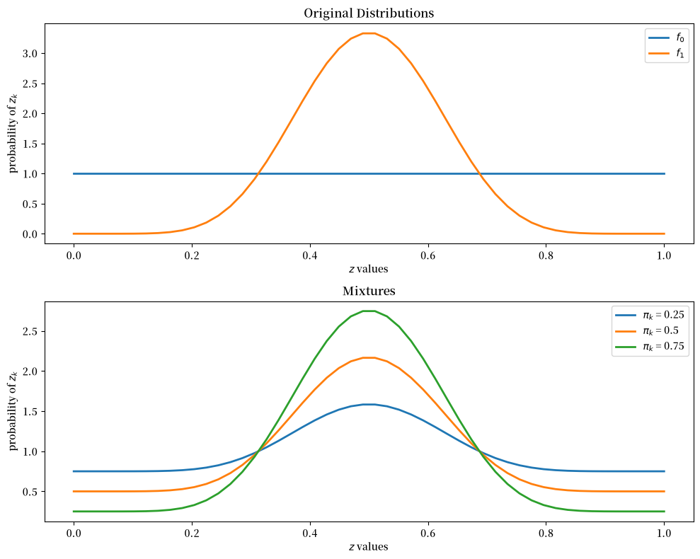
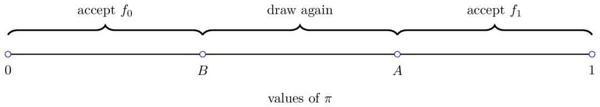
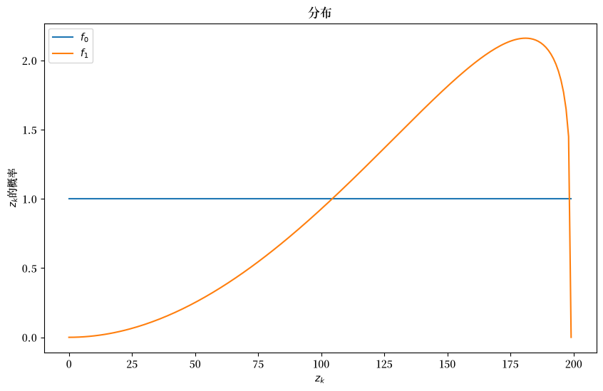
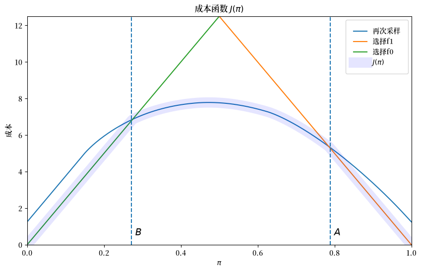
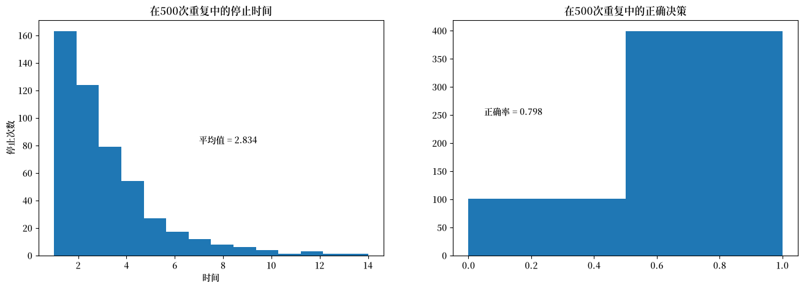
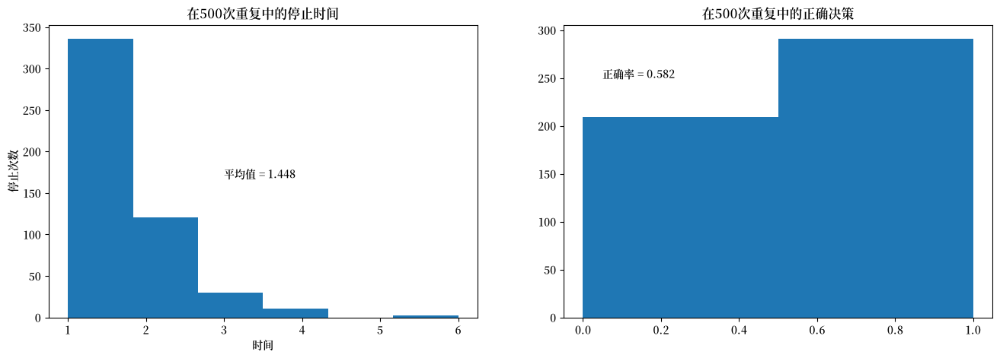

27. 用贝叶斯方法解决弗里德曼和瓦尔德问题#
27.1. 概述#
本讲座重新审视了二战期间弗里德曼和W·艾伦·瓦利斯在哥伦比亚大学美国政府统计研究组担任分析师时面临的统计决策问题。
在之前的讲座中，我们描述了亚伯拉罕·瓦尔德[Wald, 1947]如何通过扩展频率论假设检验技术并将问题顺序化来解决这个问题。
备注
瓦尔德将问题顺序化的想法与理查德·贝尔曼在1950年代发展的动态规划建立了联系。
正如我们在基础概率论与矩阵和概率的两种含义中所学到的，频率学派统计学家将概率分布视为从已知概率分布中进行大量独立同分布抽样时所构建的统计量的相对频率的度量。
这个已知的概率分布就是他的”假设”。
频率学派统计学家研究在该已知概率分布下统计量的分布
当分布是参数化概率分布集合中的一个成员时，他的假设表现为特定的参数向量形式。
这就是我们所说的频率学派统计学家”以参数为条件”的含义
他将参数视为自然界已知但他本人未知的固定数值。
统计学家通过构建与频率学派假设检验相关的第一类和第二类错误来应对他对这些参数的无知。
在本讲中，我们通过将视角从关于沃尔德序贯分析的讲座中的”客观”频率学派观点转变为贝叶斯决策者的明确”主观”观点来重新构建弗里德曼和沃尔德的问题。贝叶斯决策者将参数视为不是固定数值，而是与他通过从联合分布中抽样可以观察到的随机变量共同分布的（隐藏）随机变量。
为了形成联合分布，贝叶斯统计学家在频率派统计学家使用的条件分布基础上，补充了一个表示其个人主观意见的参数先验概率分布。
这让贝叶斯统计学家能够计算出他需要的联合分布，从而计算他想要的条件分布。
要按这种方式进行，我们需要赋予决策者以下条件：
一个初始先验主观概率 \(\pi_{-1} \in (0,1)\)，表示自然界使用 \(f_1\) 而不是 \(f_0\) 生成 i.i.d. 序列 \(\{z_k\}\) 的概率
相信贝叶斯定律作为在观察到 \(\{z_k\}\) 序列时修正其主观信念的方法
一个损失函数，用于衡量决策者如何评估第一类和第二类错误
在我们的之前的频率派版本中，主要涉及的概念有：
第一类和第二类统计错误
第一类错误是指在原假设为真时拒绝它
第二类错误是指在原假设为假时接受它
Abraham Wald的序贯概率比检验
统计检验的检验力
统计检验的临界区域
一致最优检验
在这个问题的贝叶斯重构讲座中，还包含以下额外概念：
模型 \(f_1\) 生成数据的初始先验概率 \(\pi_{-1}\)
贝叶斯定律
模型 \(f_1\) 生成数据的后验概率序列
动态规划
本讲座使用了在 似然比过程、它们在贝叶斯学习中的作用 和 这个关于可交换性的讲座 中研究的概念。
让我们从一些导入开始：
import numpy as np
import matplotlib.pyplot as plt
FONTPATH = "fonts/SourceHanSerifSC-SemiBold.otf"
import matplotlib as mpl
mpl.font_manager.fontManager.addfont(FONTPATH)
plt.rcParams['font.family'] = ['Source Han Serif SC']
from numba import jit, prange, float64, int64
from numba.experimental import jitclass
from math import gamma
27.2. 动态规划方法#
以下对问题的介绍主要遵循Dmitri Bertsekas在动态规划与随机控制[Bertsekas, 1976]中的处理方式。
决策者可以观察到一个随机变量\(z\)的一系列抽样。
他（或她）想要知道是概率分布\(f_0\)还是\(f_1\)支配着\(z\)。
在已知连续观察值是从分布\(f_0\)中抽取的条件下，这个随机变量序列是独立同分布的(IID)。
在已知连续观察值是从分布\(f_1\)中抽取的条件下，这个随机变量序列也是独立同分布的(IID)。
但观察者并不知道是哪个分布生成了这个序列。
由可交换性和贝叶斯更新中解释的原因，这意味着该序列不是IID的。
观察者有需要学习的东西，即观察值是从\(f_0\)还是从\(f_1\)中抽取的。
决策者想要确定是哪个分布在生成结果。
我们采用贝叶斯方法。
决策者从先验概率开始
备注
在Bertsekas [1976]中，信念是与分布\(f_0\)相关联的，但在这里 我们将信念与分布 \(f_1\) 关联起来,以匹配关于Wald序贯分析的讲座中的讨论。
在观察到 \(k+1\) 个观测值 \(z_k, z_{k-1}, \ldots, z_0\) 后,他将观测值由分布 \(f_1\) 描述的个人概率更新为
这是通过应用贝叶斯定律递归计算的:
在观察到 \(z_k, z_{k-1}, \ldots, z_0\) 后,决策者认为 \(z_{k+1}\) 的概率分布为
这是分布 \(f_0\) 和 \(f_1\) 的混合,其中 \(f_1\) 的权重是 \(f = f_1\) 的后验概率[1]。
为了说明这样的分布,让我们检查一些beta分布的混合。
参数为 \(a\) 和 \(b\) 的beta概率分布的密度函数是
下图的上面板显示了两个beta分布。
下面板展示了这些分布的混合,使用了不同的混合概率 \(\pi_k\)
@jit
def p(x, a, b):
r = gamma(a + b) / (gamma(a) * gamma(b))
return r * x**(a-1) * (1 - x)**(b-1)
f0 = lambda x: p(x, 1, 1)
f1 = lambda x: p(x, 9, 9)
grid = np.linspace(0, 1, 50)
fig, axes = plt.subplots(2, figsize=(10, 8))
axes[0].set_title("Original Distributions")
axes[0].plot(grid, f0(grid), lw=2, label="$f_0$")
axes[0].plot(grid, f1(grid), lw=2, label="$f_1$")
axes[1].set_title("Mixtures")
for π in 0.25, 0.5, 0.75:
y = (1 - π) * f0(grid) + π * f1(grid)
axes[1].plot(grid, y, lw=2, label=fr"$\pi_k$ = {π}")
for ax in axes:
ax.legend()
ax.set(xlabel="$z$ values", ylabel="probability of $z_k$")
plt.tight_layout()
plt.show()
findfont: Failed to find font weight normal, now using 600.
findfont: Failed to find font weight normal, now using 600.
findfont: Failed to find font weight normal, now using 600.

27.2.1. 损失和成本#
在观察到 \(z_k, z_{k-1}, \ldots, z_0\) 后，决策者可以在三种不同的行动中选择：
他确定 \(f = f_0\) 并不再抽取 \(z\) 值
他确定 \(f = f_1\) 并不再抽取 \(z\) 值
他推迟现在做决定，转而选择抽取一个 \(z_{k+1}\)
与这三种行动相关，决策者可能遭受三种损失：
当实际上 \(f=f_1\) 时，他决定 \(f = f_0\) 会遭受损失 \(L_0\)
当实际上 \(f=f_0\) 时，他决定 \(f = f_1\) 会遭受损失 \(L_1\)
如果他推迟决定并选择再抽取一个 \(z\)，会产生成本 \(c\)
27.2.2. 关于第一类和第二类错误的说明#
如果我们将 \(f=f_0\) 视为零假设，将 \(f=f_1\) 视为备择假设，那么 \(L_1\) 和 \(L_0\) 是与两类统计错误相关的损失
第一类错误是错误地拒绝了真实的零假设（“假阳性”）
第二类错误是未能拒绝错误的零假设（“假阴性”）
因此当我们将 \(f=f_0\) 作为零假设时
我们可以将 \(L_1\) 视为与第一类错误相关的损失
我们可以将 \(L_0\) 视为与第二类错误相关的损失
27.2.3. 直观理解#
在继续之前，让我们试着猜测最优决策规则可能是什么样的。
假设在某个时间点 \(\pi\) 接近于1。
那么我们的先验信念和到目前为止的证据都强烈指向 \(f = f_1\)。
另一方面，如果 \(\pi\) 接近于0，那么 \(f = f_0\) 的可能性更大。
最后，如果\(\pi\)位于区间\([0, 1]\)的中间，我们就会面临更多的不确定性。
这种推理建议采用一个顺序决策规则，我们在下图中说明：

正如我们将看到的，这确实是决策规则的正确形式。
我们的问题是确定阈值\(A, B\)，这些阈值以某种方式依赖于上述参数。
在这一点上，你可能想暂停一下，试着预测像\(c\)或\(L_0\)这样的参数对\(A\)或\(B\)的影响。
27.2.4. 贝尔曼方程#
让\(J(\pi)\)表示当前信念为\(\pi\)的决策者在最优选择下的总损失。
动态规划原理告诉我们，最优损失函数\(J\)满足以下贝尔曼函数方程
其中\(\pi'\)是由贝叶斯法则定义的随机变量
当\(\pi\)固定且\(z'\)从当前最佳猜测分布\(f\)中抽取时，该分布定义为
在贝尔曼方程中，最小化是针对三个行动：
接受假设 \(f = f_0\)
接受假设 \(f = f_1\)
推迟决定并再次抽样
我们可以将贝尔曼方程表示为
其中 \(\pi \in [0,1]\) 且
\(\pi L_0\) 是接受 \(f_0\) 的预期损失（即犯第II类错误的成本）。
\((1-\pi) L_1\) 是接受 \(f_1\) 的预期损失（即犯第I类错误的成本）。
\(h(\pi) := c + \mathbb E [J(\pi')]\)；这是继续值；即与再抽取一个 \(z\) 相关的预期成本。
最优决策规则由两个数 \(A, B \in (0,1) \times (0,1)\) 来表征，满足
和
则最优决策规则为
我们的目标是计算成本函数 \(J\) 以及相关的临界值 \(A\) 和 \(B\)。
为了使我们的计算更易于管理，我们可以使用 (27.2) 将继续成本 \(h(\pi)\) 写为
等式
是一个未知函数 \(h\) 的方程。
备注
这种方程被称为泛函方程。
使用延续成本的泛函方程 (27.4)，我们可以通过 (27.2) 的右侧推导出最优选择。
这个泛函方程可以通过取一个初始猜测并迭代来找到不动点来求解。
因此，我们用算子 \(Q\) 进行迭代，其中
27.3. 实现#
首先，我们将构造一个 jitclass 来存储模型的参数
wf_data = [('a0', float64), # beta分布的参数
('b0', float64),
('a1', float64),
('b1', float64),
('c', float64), # 另一次抽样的成本
('π_grid_size', int64),
('L0', float64), # 当f1为真时选择f0的成本
('L1', float64), # 当f0为真时选择f1的成本
('π_grid', float64[:]),
('mc_size', int64),
('z0', float64[:]),
('z1', float64[:])]
@jitclass(wf_data)
class WaldFriedman:
def __init__(self,
c=1.25,
a0=1,
b0=1,
a1=3,
b1=1.2,
L0=25,
L1=25,
π_grid_size=200,
mc_size=1000):
self.a0, self.b0 = a0, b0
self.a1, self.b1 = a1, b1
self.c, self.π_grid_size = c, π_grid_size
self.L0, self.L1 = L0, L1
self.π_grid = np.linspace(0, 1, π_grid_size)
self.mc_size = mc_size
self.z0 = np.random.beta(a0, b0, mc_size)
self.z1 = np.random.beta(a1, b1, mc_size)
def f0(self, x):
return p(x, self.a0, self.b0)
def f1(self, x):
return p(x, self.a1, self.b1)
def f0_rvs(self):
return np.random.beta(self.a0, self.b0)
def f1_rvs(self):
return np.random.beta(self.a1, self.b1)
def κ(self, z, π):
"""
使用贝叶斯法则和当前观测值z更新π
"""
f0, f1 = self.f0, self.f1
π_f0, π_f1 = (1 - π) * f0(z), π * f1(z)
π_new = π_f1 / (π_f0 + π_f1)
return π_new
如同最优储蓄 III：随机回报中所述，为了近似连续的值函数
我们在有限的 \(\pi\) 值网格上进行迭代。
当我们在网格点之间评估 \(\mathbb E[J(\pi')]\) 时，我们使用线性插值。
我们在下面定义算子函数 Q。
@jit(nopython=True, parallel=True)
def Q(h, wf):
c, π_grid = wf.c, wf.π_grid
L0, L1 = wf.L0, wf.L1
z0, z1 = wf.z0, wf.z1
mc_size = wf.mc_size
κ = wf.κ
h_new = np.empty_like(π_grid)
h_func = lambda p: np.interp(p, π_grid, h)
for i in prange(len(π_grid)):
π = π_grid[i]
# Find the expected value of J by integrating over z
integral_f0, integral_f1 = 0, 0
for m in range(mc_size):
π_0 = κ(z0[m], π) # Draw z from f0 and update π
integral_f0 += min(π_0 * L0, (1 - π_0) * L1, h_func(π_0))
π_1 = κ(z1[m], π) # Draw z from f1 and update π
integral_f1 += min(π_1 * L0, (1 - π_1) * L1, h_func(π_1))
integral = ((1 - π) * integral_f0 + π * integral_f1) / mc_size
h_new[i] = c + integral
return h_new
为了求解关键的函数方程，我们将使用Q进行迭代以找到不动点
@jit
def solve_model(wf, tol=1e-4, max_iter=1000):
"""
计算延续成本函数
* wf 是 WaldFriedman 的一个实例
"""
# 设置循环
h = np.zeros(len(wf.π_grid))
i = 0
error = tol + 1
while i < max_iter and error > tol:
h_new = Q(h, wf)
error = np.max(np.abs(h - h_new))
i += 1
h = h_new
if error > tol:
print("未能收敛！")
return h_new
27.4. 分析#
让我们检查结果。
我们将使用默认参数化的分布，如下所示
wf = WaldFriedman()
fig, ax = plt.subplots(figsize=(10, 6))
ax.plot(wf.f0(wf.π_grid), label="$f_0$")
ax.plot(wf.f1(wf.π_grid), label="$f_1$")
ax.set(ylabel="$z_k$的概率", xlabel="$z_k$", title="分布")
ax.legend()
plt.show()

27.4.1. 成本函数#
为了求解模型，我们将调用我们的solve_model函数
h_star = solve_model(wf) # 求解模型
我们还将设置一个函数来计算截断值 \(A\) 和 \(B\)，并在成本函数图上绘制这些值
@jit
def find_cutoff_rule(wf, h):
"""
该函数接收一个延续成本函数，并返回在继续采样和选择特定模型之间
转换的对应截断点
"""
π_grid = wf.π_grid
L0, L1 = wf.L0, wf.L1
# 在网格上所有点计算选择模型的成本
cost_f0 = π_grid * L0
cost_f1 = (1 - π_grid) * L1
# 找到B: cost_f0 <= min(cost_f1, h)时最大的π
optimal_cost = np.minimum(np.minimum(cost_f0, cost_f1), h)
choose_f0 = (cost_f0 <= cost_f1) & (cost_f0 <= h)
if np.any(choose_f0):
B = π_grid[choose_f0][-1] # 我们选择f0的最后一点
else:
assert False, "没有选择f0的点"
# 找到A: cost_f1 <= min(cost_f0, h)时最小的π
choose_f1 = (cost_f1 <= cost_f0) & (cost_f1 <= h)
if np.any(choose_f1):
A = π_grid[choose_f1][0] # 我们选择f1的第一点
else:
assert False, "没有选择f1的点"
return (B, A)
B, A = find_cutoff_rule(wf, h_star)
cost_L0 = wf.π_grid * wf.L0
cost_L1 = (1 - wf.π_grid) * wf.L1
fig, ax = plt.subplots(figsize=(10, 6))
ax.plot(wf.π_grid, h_star, label='再次采样')
ax.plot(wf.π_grid, cost_L1, label='选择f1')
ax.plot(wf.π_grid, cost_L0, label='选择f0')
ax.plot(wf.π_grid,
np.amin(np.column_stack([h_star, cost_L0, cost_L1]),axis=1),
lw=15, alpha=0.1, color='b', label=r'$J(\pi)$')
ax.annotate(r"$B$", xy=(B + 0.01, 0.5), fontsize=14)
ax.annotate(r"$A$", xy=(A + 0.01, 0.5), fontsize=14)
plt.vlines(B, 0, (1 - B) * wf.L1, linestyle="--")
plt.vlines(A, 0, A * wf.L0, linestyle="--")
ax.set(xlim=(0, 1), ylim=(0, 0.5 * max(wf.L0, wf.L1)), ylabel="成本",
xlabel=r"$\pi$", title=r"成本函数 $J(\pi)$")
plt.legend(borderpad=1.1)
plt.show()
findfont: Failed to find font weight normal, now using 600.
findfont: Failed to find font weight normal, now using 600.
findfont: Failed to find font weight normal, now using 600.

成本函数\(J\)在\(\pi \leq B\)时等于\(\pi L_0\)，在\(\pi \geq A\)时等于\((1-\pi) L_1\)。
成本函数\(J(\pi)\)两个线性部分的斜率由\(L_0\)和\(-L_1\)决定。
在内部区域，当分配给\(f_1\)的后验概率处于犹豫区间\(\pi \in (B, A)\)时，成本函数\(J\)是平滑的。
决策者继续采样，直到他对模型\(f_1\)的概率低于\(B\)或高于\(A\)。
27.4.2. 模拟#
下图显示了决策过程的500次模拟结果。
左图是停止时间的直方图，即做出决策所需的\(z_k\)抽样次数。
平均抽样次数约为6.6。
右图是在停止时间时正确决策的比例。
在这种情况下，决策者80%的时间做出正确决策。
def simulate(wf, true_dist, h_star, π_0=0.5):
"""
该函数接受一个初始条件并进行模拟，直到停止(当做出决策时)
"""
f0, f1 = wf.f0, wf.f1
f0_rvs, f1_rvs = wf.f0_rvs, wf.f1_rvs
π_grid = wf.π_grid
κ = wf.κ
if true_dist == "f0":
f, f_rvs = wf.f0, wf.f0_rvs
elif true_dist == "f1":
f, f_rvs = wf.f1, wf.f1_rvs
# 找到截断点
B, A = find_cutoff_rule(wf, h_star)
# 初始化几个有用的变量
decision_made = False
π = π_0
t = 0
while decision_made is False:
z = f_rvs()
t = t + 1
π = κ(z, π)
if π < B:
decision_made = True
decision = 0
elif π > A:
decision_made = True
decision = 1
if true_dist == "f0":
if decision == 0:
correct = True
else:
correct = False
elif true_dist == "f1":
if decision == 1:
correct = True
else:
correct = False
return correct, π, t
def stopping_dist(wf, h_star, ndraws=250, true_dist="f0"):
"""
重复模拟以获得做出决策所需时间的分布以及正确决策的频率
"""
tdist = np.empty(ndraws, int)
cdist = np.empty(ndraws, bool)
for i in range(ndraws):
correct, π, t = simulate(wf, true_dist, h_star)
tdist[i] = t
cdist[i] = correct
return cdist, tdist
def simulation_plot(wf):
h_star = solve_model(wf)
ndraws = 500
cdist, tdist = stopping_dist(wf, h_star, ndraws)
fig, ax = plt.subplots(1, 2, figsize=(16, 5))
ax[0].hist(tdist, bins=np.max(tdist))
ax[0].set_title(f"在{ndraws}次重复中的停止时间")
ax[0].set(xlabel="时间", ylabel="停止次数")
ax[0].annotate(f"平均值 = {np.mean(tdist)}", xy=(max(tdist) / 2,
max(np.histogram(tdist, bins=max(tdist))[0]) / 2))
ax[1].hist(cdist.astype(int), bins=2)
ax[1].set_title(f"在{ndraws}次重复中的正确决策")
ax[1].annotate(f"正确率 = {np.mean(cdist)}",
xy=(0.05, ndraws / 2))
plt.show()
simulation_plot(wf)

27.4.3. 比较静态分析#
现在让我们来看下面这个练习。
我们将获取额外观测值的成本提高一倍。
在查看结果之前，请思考会发生什么：
决策者的判断正确率会提高还是降低？
他会更早还是更晚做出决定？
wf = WaldFriedman(c=2.5)
simulation_plot(wf)

由于每次抽样成本的增加，决策者在做出决定前会减少抽样次数。
因为他用更少的抽样来做决定，他的正确判断比例下降。
当他对两个模型赋予相同权重时，这导致他的预期损失更高。
为了便于比较静态分析，我们邀请您调整模型参数并研究：
当我们增加分段线性近似中的网格点数量时，对不确定中间范围内价值函数平滑性的影响。
不同成本参数 \(L_0, L_1, c\)、两个贝塔分布 \(f_0\) 和 \(f_1\) 的参数，以及用于价值函数分段连续近似的点数和线性函数数量 \(m\) 的设置效果。
从 \(f_0\) 进行的各种模拟以及做出决定前等待时间的分布。
相关的正确和错误决定的直方图。